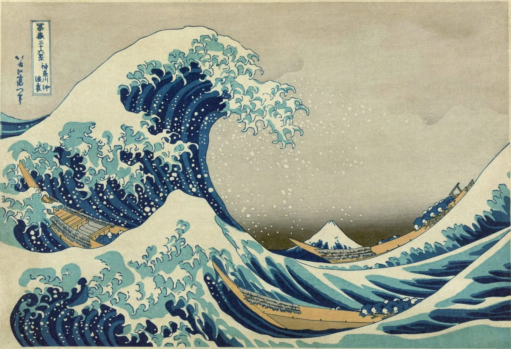
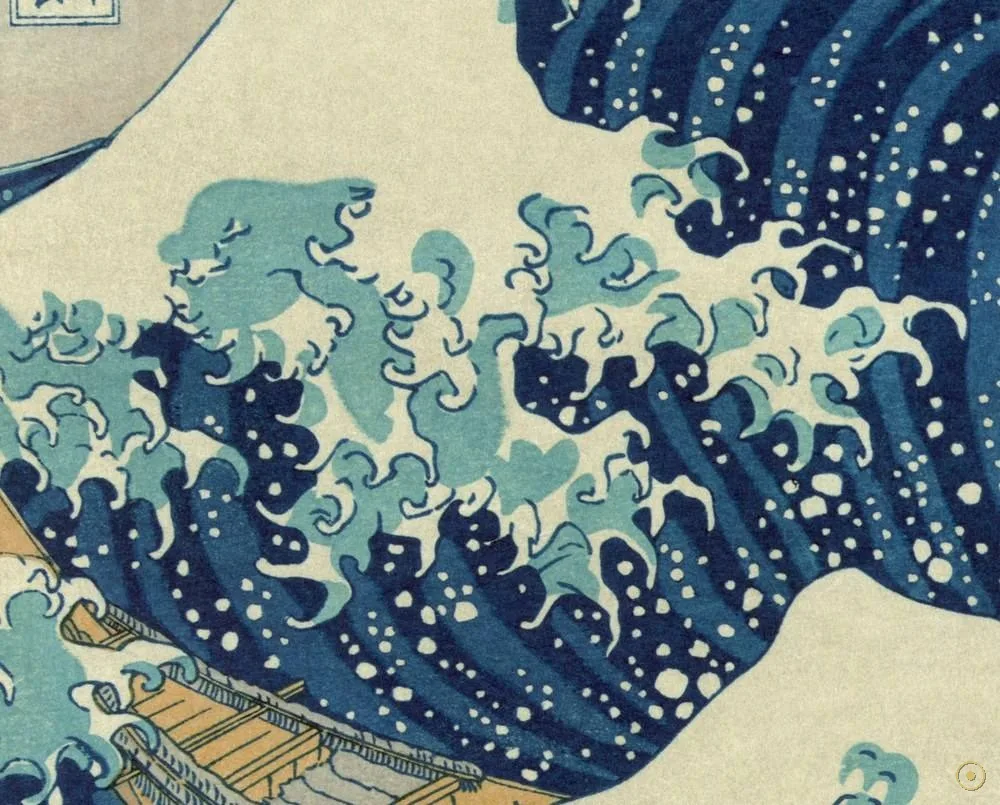
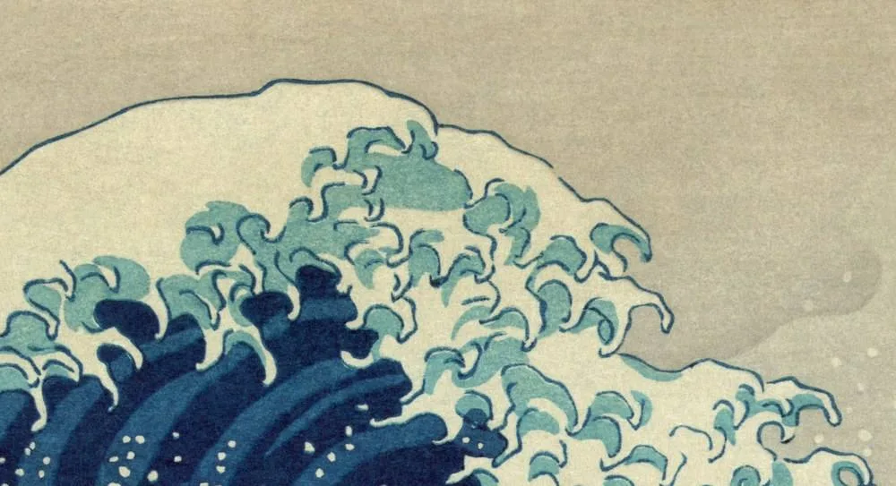
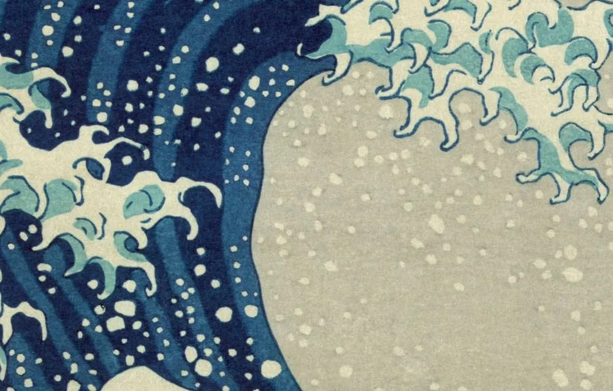
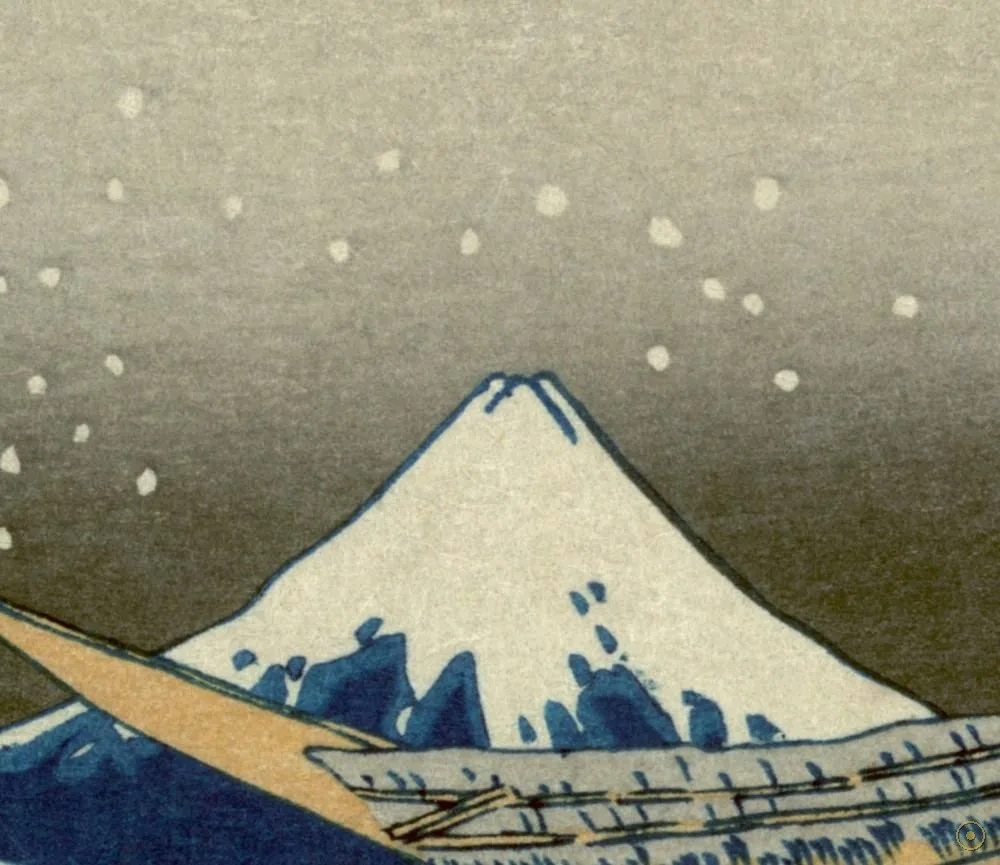
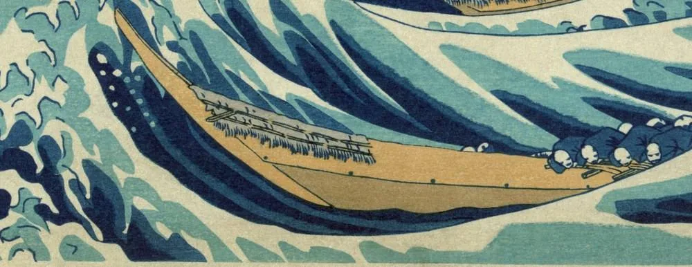
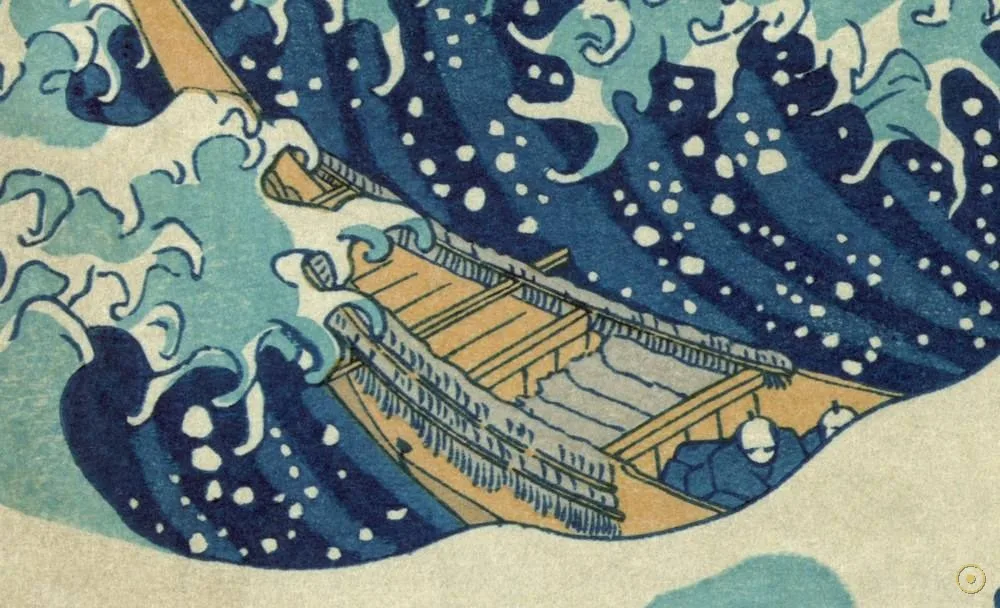
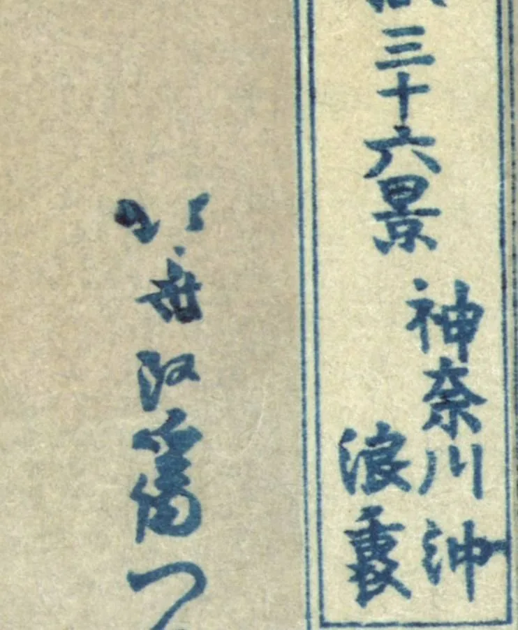

「富嶽三十六景 · 神奈川沖浪裏」——这道浪没有名字，却成了整个日本美术递给世界的名片。
约 1831 年，江户。年近七十的葛饰北斋（Katsushika Hokusai）刊出了系列版画《富嶽三十六景》，第一幅，是一片翻卷的白浪：三条小船陷在浪谷里，船工伏身划桨，而浪的正上方、空隙之中，静静立着一座雪山——富士。这就是后来被全世界称为「Great Wave」的《神奈川冲浪里》。
它首先是一场「颜料的胜利」。普鲁士蓝经由荷兰商船传入日本，是一种当时昂贵而稀有的新颜料。北斋把它大量用在天空与海水上，让画面第一次出现了那种深沉、透明、几乎发光的蓝。这套版画在日本一炮而红，也是史上第一批专为大幅风景而作的浮世绘。
但它真正的影响发生在千里之外。19 世纪下半叶，这些版画流入欧洲，像一颗石子投进平静的水面：印象派、后印象派、新艺术运动都被它震到，莫奈、凡·高反复临摹，德彪西甚至以海为题写下《大海》。这一页，我们不看它的名气，只看它的构造——从张爪的浪尖，到浪隙里的富士，再到那抹改变了版画史的蓝。
—— 葛饰北斋《富嶽三十六景》题签 · 落款「北斎改為一筆」（据英译转译）
在本页左下角，可点亮一段与这幅版画同乡的日本音律。
从怪兽般的浪爪，到浪隙里的一座火山——每一个光点，都是一处可以验证的刀刻痕迹。

点击画面中的 ✦ 光点 查看画面细节 · 图片来源：Wikimedia Commons（公有领域）
它诞生于江户的印刷作坊，却在一个世纪后，成了整个现代艺术都绕不开的一张图。
约 1830–1831 · 江户
1830 年代初，北斋已年近七十。他筹划了一整套以富士山为题的风景版画——《富嶽三十六景》，用上了刚传入日本不久的普鲁士蓝。这套版画由出版商西村屋与八发行，采用「横大判」大幅格式，是日本第一批专为风景设计的大画面锦绘。《神奈川沖浪裏》作为开篇之作，把一座浪推到了富士山之前。
➤19 世纪下半叶 · 欧洲
1850 年代起，日本的浮世绘随贸易与博览流入欧洲。北斋的浪让当时的画家第一次意识到：构图可以不对齐，地平线可以很高，平面本身就能有力量。印象派、后印象派、新艺术运动纷纷吸收它的语言；凡·高、莫奈临摹收藏，德彪西受其启发写下交响素描《大海》——海，第一次被那样「画」出来。
➤今天 · 全球
如今《神奈川沖浪裏》的原始印张分别藏于大都会艺术博物馆、大英博物馆、V&A、LACMA 等机构，而它的图像则出现在邮票、海报、表情包、时装与无数再创作里。它早已不只是一幅画，而是一个文化符号：当人们想表达「不可抗的巨力」或「日本的形象」时，脑中浮现的，多半就是这道浪。

真事一 · 它是「印刷品」，不是「一幅画」。木版画靠分工完成：画师（北斋）出图稿，雕版师刻数块木板，拓印师逐色套印。一幅成品要用多块版反复套色，因此同一图样可以印出成百上千张——这也意味着，世界各地博物馆收藏的「原版」，其实是同一批版的多次印刷，颜色、纸色、磨损各有差异。
真事二 · 那抹蓝，来自一场跨国贸易。普鲁士蓝是欧洲人 18 世纪合成的第一种现代颜料，比传统植物蓝更稳定、更浓烈。它经荷兰商船（锁国时期唯一的西方窗口）传入日本，被称为「ベロ藍」。北斋大量使用它，既成就了画面的深度，也让这批版画的成本与门槛显著抬高——可以说，是全球化贸易的产物。
真事三 · 画名的「主角」是富士，不是浪。整套系列题名《富嶽三十六景》，画题「神奈川沖浪裏」意为「在神奈川外海、浪的下方」。北斋真正的主题，是从各个角度「看富士」。这张之所以被记住，是因为他让一座浪挡住了大半座山——而这恰恰是「看山」最戏剧化的一种看法。
※ 创作年份、印数与各馆藏品差异存在学界讨论；押送船编制与浪高为据公开研究推算；引文与题名据英译转译，措辞或因译本而异。
放大看：每一道白线都是刀痕，每一块蓝都是一次套印。

泡沫被刻成五指向下的爪，仿佛海有了意志。

用实的浪围出虚的空，危险悬在半空。

小小的雪山，是动荡世界里最稳的一点。

三条货船、约三十名船工，被按在巨浪之下。

俯身划桨，身体绷成向前的斜线，不是蜷缩。
18 世纪欧洲合成、经荷兰传入，浓烈而不透明。

「改名为『为一』的北斋所画」——一生名号三十余。
名义上的主角是富士，浪只是「看山」的方式。
普鲁士蓝的传入，让浮世绘从以线条和少数植物色为主的旧样貌，转向大面积的浓烈色彩。北斋、广重等人用它重写了天空与海。这种「新颜料 + 大众印刷」的组合，让精美的风景版画第一次可以批量、廉价地流入市井——艺术革命有时就藏在颜料罐里。
在西方透视法看来，这幅画几乎「不合规矩」：地平线被抬得极高，空间被浪压扁，主体偏在左，右侧留白。但正是这种不对称与平面化，给了画面前所未有的张力。欧洲画家后来从中学到：不必忠实于眼睛，也可以忠实于「冲击」。
19 世纪下半叶，日本美术品大量涌入欧洲，形成所谓 Japonisme（日本主义）。北斋、广重的手工艺美学深刻影响了印象派（莫奈、德加）、后印象派（凡·高）、新艺术运动乃至音乐（德彪西《大海》）。《神奈川沖浪裏》是这场跨文化地震里最醒目的那块震源。
它被复制到邮票、T 恤、动画、表情包与无数二次创作中，成为「日本」与「自然之力」的通用象征。博物馆里，原始印张一票难求；网络上，它又不断被改写成各种当代版本。一幅 1831 年的印刷品，以最典型的「大众媒介」方式诞生，也以同样的方式活到了今天。
葛饰北斋生于江户（今东京），本名中岛时太郎。
刊行《富嶽三十六景》开篇《神奈川沖浪裏》，时年约七十，用普鲁士蓝。
浮世绘流入欧洲，掀起「日本主义」；印象派、后印象派深受影响。
印张分藏于大都会、大英博物馆、V&A、LACMA 等，成最著名的日本图像之一。
全球最被复制的艺术符号之一——邮票、海报、动画、时装里的常客。